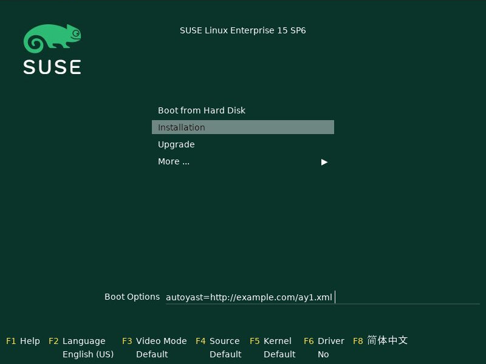
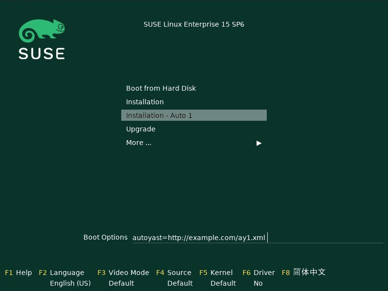

When you are doing Linux installations regularly or have a large number of machines to deploy you might want to make changes to the official installation media to make work more efficient.
This might range from having your network setup parameters integrated, to running your favorite autoyast or kickstart profile automatically, to integrating a driver update or a fixed package without which you cannot run the installation, to upgrading to latest kernel and modules your hardware require, to updating the entire installer.
Or you might want to have a size reduced variant of the full media containing only the software modules and products you need. Or minimalistic media for purely network-based installations.
There is a group of tools that lets you do all this easily. They come in two
packages: checkmedia and mkmedia.
A lesser known fact is that these tools work not only with SUSE media but also with Multi-Linux media. That is, with Fedora, RHEL, CentOS, and other RHEL derivatives. And not only with installation media but also Live media.
Supported are:
-
openSUSE media (Leap, Tumbleweed, Slowroll)
-
SLE-11, SLE-12, SLE-15 (YaST installer)
-
SLE-16 (Agama installer)
-
SLE-Micro self-install images
-
any KIWI-generated installation media
-
SUSE Multi-Linux media
-
Fedora, RHEL, and derivatives (CentOS, Rocky, AlmaLinux, …) media
This article will introduce these tools and walk you through a number of use cases.
Note that these tools are not suitable for creating installation or Live media from scratch. You always have to have some existing ISO image to start with.
Note also that these media are not only suitable to be used as ISO for burning DVDs but are at the same time also hybrid images to be used as disks (USB media). You can even produce pure disk images and skip the ISO part if you are going to use them only as disk images.
- checkmedia and tagmedia
- verifymedia
- mkmedia
- Set boot options
- Set installer config options
- Create online/network installation media from full media
- 1. SLE15, SLE-16, Leap-16 online media
- 2. Tumbleweed, Leap-15 online media (not officially available)
- 3. Multi-Linux, Fedora online media
- 4. Tumbleweed, Leap-15 network media (no installer)
- 5. Leap-16, SLE-16 network media (no installer, not officially available)
- 6. Multi-Linux, Fedora network media (not officially available)
- Create customized SLE-15 media containing selected products and SLE-modules
- Create SUSE media with updated installer using tftpboot-installation-<PRODUCT> packages
- Update kernel, modules, and firmware on installation media
- Integrate changes into installation system or initrd
- Integrate driver updates
- Integrate add-on repositories
- Modify files on the installation medium
- Advanced examples
- Further reading
checkmedia and tagmedia
Both checkmedia and tagmedia are part of the checkmedia package.
checkmedia is the tool for users to verify the correctness of downloaded
media. It relies on embedded meta data like an sha256 digest and/or gpg
signature to work. The Multi-Linux equivalent is checkisomd5.
tagmedia manages or creates these meta data. The Multi-Linux equivalent
is implantisomd5.
Let’s have a look at typical examples.
checkmedia
# checkmedia Fedora-Server-netinst-x86_64-41-1.4.iso
app: Fedora-S-dvd-x86_64-41
iso size: 932520 kiB
skip: 30 kiB
checking: 100%
result: iso md5 ok, fragments md5 ok
md5: 7675831e6771993c605ba4808d57ecab
signature: not signed# checkmedia openSUSE-Tumbleweed-DVD-x86_64-Snapshot20250522-Media.iso
app: openSUSE-Tumbleweed-DVD-x86_64-Build4388.1-Media
iso size: 4546910 kiB
pad: 300 kiB
partition: start 7612 kiB, size 4539972 kiB
checking: 100%
result: iso sha256 ok, partition sha256 ok
sha256: 3d0d694634c0ed76a38f4960e95894d7a754b96a23d7d102ee4a7f302b32b3f4
signature: ok
signed by: openSUSE Project Signing Key <opensuse@opensuse.org>You can see that both images are correct. Fedora is using md5 instead of
sha256, though. The shown md5 and sha256 digests are the values you would
get if you were to run md5sum or sha256sum commands on the image
files.
In addition, the digest meta data stored in the openSUSE image are signed
using the openSUSE key. The key is available on every Tumbleweed system - as
part of the openSUSE-build-key package. This way you can be sure the image
has not been modified by anyone.
Without a signature you have to rely on manually comparing the md5 or sha256 digests with values you get from trustworthy sources.
tagmedia
tagmedia gives an insight into the meta data block holding the digest data:
# tagmedia Fedora-Server-netinst-x86_64-41-1.4.iso
ISO MD5SUM = 67f0b58caf55a50887e4d0068eb625c6
SKIPSECTORS = 15
RHLISOSTATUS = 0
FRAGMENT SUMS = ad5a88259b4dc247c12d5c248fd3e986d2c55bdb5181284b4e246dca1577
FRAGMENT COUNT = 20
THIS IS NOT THE SAME AS RUNNING MD5SUM ON THIS ISO!!# tagmedia openSUSE-Tumbleweed-DVD-x86_64-Snapshot20250522-Media.iso
check = 1
pad = 150
sha256sum = 57d52ef2c779d0fe4f40e03d80b599c72f9b401022d19700f7860457540355c6
partition = 15224,9079944,621370e05b0ef2438db4ac6c407c9c501914ba49878a5bf0dd5ba698ad90af3c
signature = 30448You will immediately notice the md5 and sha256 digests stored in the meta
data are not the same as the calculated digests shown by checkmedia.
Fedora even embeds a line warning people about this. The stored digest is in
both cases the digest calculated excluding the meta data block.
If there is a signature entry it points to the start of a signature block.
As an experiment, let’s sign the Fedora image. Say, you have a gpg key
susetest in your key ring; you can do:
# tagmedia --create-signature susetest Fedora-Server-netinst-x86_64-41-1.4.iso
public key for verifying Fedora-Server-netinst-x86_64-41-1.4.iso written to Fedora-Server-netinst-x86_64-41-1.4.iso.keyLet’s check what changed:
# tagmedia Fedora-Server-netinst-x86_64-41-1.4.iso
ISO MD5SUM = 67f0b58caf55a50887e4d0068eb625c6
SKIPSECTORS = 15
RHLISOSTATUS = 0
FRAGMENT SUMS = ad5a88259b4dc247c12d5c248fd3e986d2c55bdb5181284b4e246dca1577
FRAGMENT COUNT = 20
THIS IS NOT THE SAME AS RUNNING MD5SUM ON THIS ISO!!
SIGNATURE = 1864980You can see a newly added SIGNATURE entry.
For convenience, tagmedia has also stored the public part of the key in
Fedora-Server-netinst-x86_64-41-1.4.iso.key - you will need it to verify the signature:
# gpg Fedora-Server-netinst-x86_64-41-1.4.iso.key
gpg: WARNING: no command supplied. Trying to guess what you mean ...
pub ed25519 2025-05-16 [SC] [expires: 2028-05-15]
CC3DFF978856FF27B1A53BD88C471DBABABCEC4C
uid susetest
sub cv25519 2025-05-16 [E] [expires: 2028-05-15]Now, run checkmedia again:
# checkmedia \
--key-file Fedora-Server-netinst-x86_64-41-1.4.iso.key \
Fedora-Server-netinst-x86_64-41-1.4.iso
app: Fedora-S-dvd-x86_64-41
iso size: 932520 kiB
skip: 30 kiB
checking: 100%
result: iso md5 ok, fragments md5 ok
md5: fa2076cd08cb69b002afdeb2faad629a
signature: ok
signed by: susetestNote that although the md5 digest of the image has changed (the image now
contains the gpg signature) the stored md5 digest shown by tagmedia has not
- this is because as mentioned previously the stored md5 digest is
calculated excluding the meta data block.
Note also that checkisomd5 will ignore the signature, but the file will
still be correct from the perspective of checkisomd5, even with embedded
signature.
verifymedia
verifymedia and mkmedia are part of the mkmedia package. These tools
are for people creating new or modified media.
In contrast to checkmedia, verifymedia testifies technical correctness:
# verifymedia openSUSE-Tumbleweed-DVD-x86_64-Snapshot20250522-Media.iso
Verifying: openSUSE-Tumbleweed-DVD-x86_64-Snapshot20250522-Media.iso
Check results: [✔] = ok, [✘] = bad, [!] = not ideal
[✔] image has ISO-9660 file system
[✔] image uses Rock Ridge extension
[✔] image uses Joliet extension
[✔] image has volume id
[✔] all files are world-readable
[✔] all files are owned by root
[✔] media style: suse
[✔] media variant: install
[✔] media architecture: x86_64
[✔] media layout supported
[✔] .treeinfo architecture matches
[✔] kernel and initrd referenced in .treeinfo exist
[✔] kernel exists
[✔] initrd exists
[✔] isolinux config exists
[✔] UEFI grub config exists
[✔] UEFI grub config references correct root file system
[✔] UEFI boot loader exists
[✔] UEFI boot image exists
[✔] no garbage files
[✔] has MBR or GPT partition table
[✔] has boot partition with VFAT file system
[✔] boot partition type is EFI System Partition
[✔] boot partition refers to UEFI boot image file
[✔] has data partition pointing to ISO image
[✔] ISO data partition has non-zero offset
[✔] no invalid partition entries
[✔] El Torito x86 legacy bootable
[✔] El Torito UEFI bootable
[✔] El Torito UEFI entry points to boot partition
[✔] ISO has digest
[✔] ISO digest is sha256 or better
[✔] ISO is ready to be signed
[✔] ISO is signedLooks really good. :-)
But this is not always the case. If you are curious, experiment a bit with publicly available installation media.
Here is some slightly incorrect example:
# verifymedia openSUSE-Tumbleweed-NET-aarch64-Snapshot20250522-Media.iso
Verifying: openSUSE-Tumbleweed-NET-aarch64-Snapshot20250522-Media.iso
Check results: [✔] = ok, [✘] = bad, [!] = not ideal
...
[✘] .treeinfo architecture matches
'x86_64' != 'aarch64'
'arch' entry in 'general' section in .treeinfo must match media architecture.
[✘] kernel and initrd referenced in .treeinfo exist
boot/x86_64/loader/initrd
boot/x86_64/loader/linux
Kernel and initrd referenced in .treeinfo must exist.
...In this case, the .treeinfo file does not use the correct architecture.
If you create media yourself with mkmedia and run into problems, it might be a good idea
to check your modified media with verifymedia for signs of trouble.
mkmedia
mkmedia is the tool to modify existing installation or Live images. It used to be
called mksusecd but that name does not reflect the fact that it is no longer limited to SUSE media.
Typical things you can do include
-
set boot options
-
set installer config options
-
create online / network installation media from full installation media
-
create customized SLE media containing selected products and SLE-modules
-
create media with updated installer using tftpboot-installation-<PRODUCT> packages
-
update kernel, modules, and firmware on installation media
-
integrate changes into installation system or initrd
-
integrate driver updates
-
integrate add-on repositories
Some advanced use-cases
-
create pure disk image (no ISO image)
-
update shim or grub
-
sign your own media
-
sign Multi-Linux / RHEL media
Let’s go through the list looking at some examples.
Set boot options
The --boot option lets you add a new boot option.
For example, to have an AutoYaST installation as default, add a reference to your AutoYaST file:
# mkmedia --create new.iso \
--boot "autoyast=http://example.com/ay1.xml" \
SLE-15-SP6-Online-x86_64-QU2-Media1.iso
media style suse, variant install
Repositories:
SLES15-SP6 [15.6-0]
assuming repo-md sources
using signing key, keyid = 7B0EC6208CA8E305
El-Torito legacy bootable (x86_64)
UEFI image: boot/x86_64/efi
updating UEFI image: boot/x86_64/efi
El-Torito UEFI bootable (x86_64)
building: 100%
calculating sha256...This is what the boot screen now looks like:
Boot screen with AutoYaST option added

You can use --add-entry to create a separate entry instead of modifying
the default boot entry:
# mkmedia --create new.iso \
--boot "autoyast=http://example.com/ay1.xml" \
--add-entry "Auto 1" \
SLE-15-SP6-Online-x86_64-QU2-Media1.iso
...Boot screen with separate AutoYaST entry

Another thing you might want to change is the default kernel console, for example on aarch64:
# mkmedia --create new.iso \
--boot "console=ttyAMA0" \
SLE-15-SP6-Online-aarch64-QU2-Media1.iso
...For a documentation of possible boot options look here:
Set installer config options
In most cases, boot options will be intended not for the kernel but for the installer. In this case you can have configuration options integrated into the initrd directly.
For example, setting the AutoYaST parameter could instead be done this way:
# mkmedia --create new.iso \
--initrd-config "autoyast=http://example.com/ay1.xml" \
SLE-15-SP6-Online-x86_64-QU2-Media1.iso
...The advantage is that you can take kernel and initrd from the new installer medium and use it in a different context, for example as PXE boot files, without worrying about passing the correct boot options.
Also, there are situations where you might not have an interactive boot loader. You can then prepare the initrd to suit your needs.
For example, on IBM z Systems the created media are directly zIPL-bootable (the official SLE-15 media are not). If you turn off manual mode and add all necessary settings, you can use these media without any console interaction:
# mkmedia --create new.iso \
--boot "-manual" \
--initrd-config "autoyast=https://example.com/foo" \
SLE-15-SP6-Online-s390x-GM-Media1.iso
media style suse, variant install
Repositories:
SLES15-SP6 [15.6-0]
Warning: more than one kernel/initrd pair to choose from
(Use '--arch' option to select a different one.)
Using boot/s390x/linux & boot/s390x/initrd.
assuming repo-md sources
using signing key, keyid = 7B0EC6208CA8E305
zIPL bootable (s390x)
El-Torito legacy bootable (x86_64)
El-Torito legacy bootable (s390x)
building: 100%
calculating sha256...Create online/network installation media from full media
There are two types of network-based installation media:
-
media that contain the installer (online media)
-
smaller media that do not contain the installer (network media)
To avoid confusion, in this document the first type will be referred to as online media, the second as network media.
Both variants do not contain the installation software repository.
There is a third type of installation media: offline media that contain installer and software repository, here referred to as full media.
Examples for the first variant are SLE online media or Fedora netinst media. The second variant is used by Leap and Tumbleweed NET media. Note that for the second variant even the installer is loaded via network - that is, there must be a URL pointing at some location providing the installer for download.
Note that the steps in the examples below look similar, details differ mainly due to the fact that three different installation programs are used:
-
SLE-15, Leap-15, Tumbleweed: YaST
-
SLE-16, Leap-16, (future) Tumbleweed: Agama
-
Multi-Linux, Fedora, RHEL: Anaconda
Let’s look at some examples that create online and network media from full media.
1. SLE15, SLE-16, Leap-16 online media
# mkmedia --create new.iso \
--micro \
SLE-15-SP6-Full-x86_64-GM-Media1.isoOption --micro will make mkmedia remove all files except the installer
and those needed for booting. For SLE media you do not need to pass a
repository because the repository information is read from a registration
server. Leap-16 has the online repository location already in its configuration.
new.iso is equivalent to SLE/Leap online media.
2. Tumbleweed, Leap-15 online media (not officially available)
# mkmedia --create new.iso \
--micro \
--defaultrepo=https://download.opensuse.org/tumbleweed/repo/oss \
openSUSE-Tumbleweed-DVD-x86_64-Snapshot20250614-Media.isoAs in the last example, option --micro will keep the installer on the medium.
But for Tumbleweed and Leap-15 you need to provide the repository location using the --defaultrepo option.
The difference to the Tumbleweed network medium which is available for download is that you can use this image for installing any Tumbleweed snapshot.
3. Multi-Linux, Fedora online media
If there is no repository on the installation medium, the installer will usually automatically try to get an online repository from a mirror list.
This works nice for Fedora, for example; all you have to do is:
# mkmedia --create new.iso \
--micro \
Fedora-Server-dvd-x86_64-42-1.1.iso
...If an online repository cannot be found automatically or you have your own repository set up anyway, specify the online repository explicitly:
# mkmedia --create new.iso \
--micro \
--initrd-config inst.repo=https://example.com/foo \
SUSE-Liberty-Linux-9.6.DVD-x86_64.iso
...The inst.repo option should point to a location containing the unpacked full media.
The media produced in this way are equivalent to the available netinst/netinstall media.
4. Tumbleweed, Leap-15 network media (no installer)
# mkmedia --create new.iso \
--nano \
--defaultrepo=https://download.opensuse.org/distribution/leap/15.6/repo/oss \
openSUSE-Leap-15.6-DVD-x86_64-Build710.3-Media.isoOption --nano leaves only files needed for booting kernel and initrd. In contrast to --micro it
also removes the installer from the medium.
As in the Tumbleweed online example, you also need to set the repository location. The installer is loaded
from a predefined location (from the boot/<ARCH> sub-directory) within the repository.
5. Leap-16, SLE-16 network media (no installer, not officially available)
# mkmedia --create new.iso \
--nano \
--initrd-config root=live:https://example.com/foo/squashfs.img \
Leap-16.0-offline-installer-x86_64.install.isoFor Agama-based media like Leap-16 or SLE-16 you have to provide the Live root file system
via network yourself - there is currently no official download location.
For this, copy LiveOS/squashfs.img from the full medium and make it available on a server.
Leap-16 has a default repository location in its config, you do not need to set it.
But if you want to pass your own repository, use the inst.install_url setting like this:
# mkmedia --create new.iso \
--nano \
--initrd-config root=live:https://example.com/foo/squashfs.img \
--initrd-config inst.install_url=https://download.opensuse.org/distribution/leap/16.0/repo/oss \
Leap-16.0-offline-installer-x86_64.install.iso6. Multi-Linux, Fedora network media (not officially available)
For network media you have to prepare a server location containing the unpacked full medium.
Say, it is available at https://example.com/foo.
Then use the inst.stage2 option to point at that location. The installer will be downloaded from there.
# mkmedia --create new.iso \
--nano \
--boot -inst.stage2 \
--initrd-config inst.stage2=https://example.com/foo \
Fedora-Server-dvd-x86_64-42-1.1.iso
...Note that since inst.stage2 is used in the boot config, the command removes it from there. Otherwise setting inst.stage2
in the initrd would have no effect.
Alternatively, you could instead do:
# mkmedia --create new.iso \
--nano \
--boot inst.stage2=https://example.com/foo \
Fedora-Server-dvd-x86_64-42-1.1.iso
...For Multi-Linux - where you have to set the repository location explicitly - the command would look like this:
# mkmedia --create new.iso \
--nano \
--boot -inst.stage2 \
--initrd-config inst.stage2=https://example.com/foo \
--initrd-config inst.repo=https://example.com/foo \
SUSE-Liberty-Linux-9.6.DVD-x86_64.iso
...Note that inst.stage2 and inst.repo point at the same location.
Create customized SLE-15 media containing selected products and SLE-modules
First, get a list of available products and modules:
# mkmedia --list-repos SLE-15-SP6-Full-x86_64-GM-Media1.iso
media style suse, variant install
Repositories:
Basesystem-Module [15.6-0]
Containers-Module [15.6-0]
Desktop-Applications-Module [15.6-0]
Development-Tools-Module [15.6-0]
HPC-Module [15.6-0]
Legacy-Module [15.6-0]
Live-Patching [15.6-0]
Public-Cloud-Module [15.6-0]
Python-3-Module [15.6-0]
SUSE-Real-Time-Module [15.6-0]
SAP-Applications-Module [15.6-0]
SAP-Business-One-Module [15.6-0]
Server-Applications-Module [15.6-0]
Transactional-Server-Module [15.6-0]
Web-Scripting-Module [15.6-0]
SLEHA15-SP6 [15.6-0]
SLE-15-SP6-RT [15.6-0]
SLED15-SP6 [15.6-0]
SLES15-SP6 [15.6-0]
SLE-15-SP6-SAP [15.6-0]
SLEWE15-SP6 [15.6-0]There is no enforced naming scheme but by convention modules end in -Module, the other repositories are products.
You can activate exactly one product and any number of modules.
For example, SLES-15 + Basesystem + Containers:
# mkmedia --create new.iso \
--include-repos SLES15-SP6,Basesystem-Module,Containers-Module \
SLE-15-SP6-Full-x86_64-GM-Media1.iso
...Note that some modules might depend on others - but there is no automatic dependency resolution.
If you prefer, you can even have all repositories automatically enabled:
# mkmedia --create new.iso \
--include-repos SLES15-SP6,Basesystem-Module,Containers-Module \
--enable-repos yes \
SLE-15-SP6-Full-x86_64-GM-Media1.iso
...Create SUSE media with updated installer using tftpboot-installation-<PRODUCT> packages
Sometimes you would like to have installation media using the latest installer - but the release cycle for updated media is too slow.
There is, however, a group of packages updated regularly:
tftpboot-installation-<PRODUCT>-<ARCH>.rpm. They are intended to setup a
tftp installation server for <PRODUCT> on architecture <ARCH>. An example
might be tftpboot-installation-SLE-15-SP6-x86_64.rpm.
These packages contain all files needed to build an installation medium. mkmedia can use them directly:
# mkmedia --create new.iso \
SLE-15-SP6-Full-x86_64-GM-Media1.iso \
tftpboot-installation-SLE-15-SP6-x86_64.rpm
...Note that you pass the package as argument after the ISO image. This is because files in later arguments overwrite files from previous arguments.
On a side note, you can build online and network media directly from tftpboot-installation-<PRODUCT>
packages without needing any ISO image to start with. This is the only case where mkmedia does not
require an already existing medium.
But you must set the volume id explicitly (choose one freely) and you must use either --micro (to get an online medium) or
--nano (to get a network medium). And remember to set repository and installer download locations as needed.
For example, to build a SLE-15-SP6 online medium:
# mkmedia --create new.iso \
--micro \
--volume foobar \
tftpboot-installation-SLE-15-SP6-x86_64.rpm
...Update kernel, modules, and firmware on installation media
Note that this is not about installing an updated kernel on the target system. That would be a completely unrelated task.
This is about having a new kernel active during the installation process.
The typical layout would have the kernel directly on the medium, modules and firmware in the initrd and, for Live media, kernel, firmware, and modules also in the Live root file system.
mkmedia takes care of updating the files in all these locations.
Let’s look at some use-cases.
1. Update kernel, keep module config
# mkmedia --create new.iso \
--kernel kernel-default-6.15.2-1.1.x86_64.rpm \
-- \
openSUSE-Tumbleweed-DVD-x86_64-Snapshot20250522-Media.iso
media style suse, variant install
Repositories:
openSUSE [20250522-0]
assuming repo-md sources
using signing key, keyid = 7B0EC6208CA8E305
kernel firmware: keep existing version
kernel firmware: 1859/2057 files updated
kernel version: 6.14.6-1-default --> 6.15.2-1-default
kernel modules added:
crc16, dev-sync-probe, drm_gpusvm
kernel modules missing:
chacha-x86_64, crc4, libchacha, libchacha20poly1305, libpoly1305,
poly1305-x86_64
initrd base modules:
loop, squashfs, lz4_decompress, lz4_compress, lz4hc_compress, 842_compress,
842_decompress, xxhash, zstd_decompress, zram, ext4, crc16, mbcache, jbd2
El-Torito legacy bootable (x86_64)
UEFI image: boot/x86_64/efi
El-Torito UEFI bootable (x86_64)
building: 100%This updates kernel and modules - but not firmware. mkmedia will try to
keep the existing module config - but the new kernel package might have a
slightly different list of modules. The output will tell you the changes
made to the modules included in the initrd. You can still fine-tune the module config
using the --modules option.
Note that module dependencies are automatically resolved.
Note also the isolated -- in the argument list - this is necessary because
the --kernel option accepts a variable number of arguments.
Trying a kernel update with Leap-15.6, there is a problem, though:
# mkmedia --create new.iso \
--kernel kernel-default-6.4.0-150600.21.3.x86_64.rpm \
-- \
openSUSE-Leap-15.6-DVD-x86_64-Build630.1-Media.iso
media style suse, variant install
Repositories:
openSUSE-Leap [15.6-1]
assuming repo-md sources
using signing key, keyid = 7B0EC6208CA8E305
kernel firmware: keep existing version
kernel firmware: 1179/1289 files updated
kernel version: 6.4.0-150600.9-default --> 6.4.0-150600.21-default
kernel modules missing:
8390, 88pg86x, 9pnet_fd, 9pnet_rdma, a100u2w, acer-wireless, acerhdf,
acpi_configfs, acpi_tad, act8865-regulator, ad5398, ad714x, ad714x-i2c,
[... lots of missing modules ...]
...Note the huge list of missing modules - what’s going on? The answer is that on Leap the kernel package is split into three separate
packages: kernel-default, kernel-default-extra, and kernel-default-optional. You must provide all kernel-related package.
Let’s try again:
# mkmedia --create new.iso \
--kernel kernel-default-6.4.0-150600.21.3.x86_64.rpm \
kernel-default-extra-6.4.0-150600.21.3.x86_64.rpm \
kernel-default-optional-6.4.0-150600.21.3.x86_64.rpm \
-- \
openSUSE-Leap-15.6-DVD-x86_64-Build630.1-Media.iso
media style suse, variant install
Repositories:
openSUSE-Leap [15.6-1]
assuming repo-md sources
using signing key, keyid = 7B0EC6208CA8E305
kernel firmware: keep existing version
kernel firmware: 1680/1922 files updated
kernel version: 6.4.0-150600.9-default --> 6.4.0-150600.21-default
kernel modules added:
drm_gpuvm
kernel modules missing:
sha3_generic
initrd base modules:
loop, squashfs, lz4_decompress, xxhash, zstd_decompress, zram, ext4, crc16,
mbcache, jbd2
El-Torito legacy bootable (x86_64)
UEFI image: boot/x86_64/efi
El-Torito UEFI bootable (x86_64)
building: 100%This time it worked much better.
In general, openSUSE and SLE use package names like kernel-default, kernel-default-extra, and kernel-default-optional for kernel and modules
and kernel-firmware-* for kernel firmware. If you have specialized KMP packages (*-kmp-default), you can use them, too.
Multi-Linux uses kernel-core, kernel-modules, kernel-modules-core, kernel-modules-extra, and kernel-modules-internal for kernel and modules
and *-firmware for kernel firmware.
Here is an example of updating the kernel on a Multi-Linux installation medium:
# mkmedia --create new.iso \
--kernel kernel-core-5.14.0-570.12.1.el9_6.x86_64.rpm \
kernel-modules-5.14.0-570.12.1.el9_6.x86_64.rpm \
kernel-modules-core-5.14.0-570.12.1.el9_6.x86_64.rpm \
-- \
SUSE-Liberty-Linux-9.5.DVD-x86_64.iso
media style rh, variant install
Repositories:
AppStream [1735055691]
BaseOS [1735055669]
assuming repo-md sources
using signing key, keyid = 7B0EC6208CA8E305
kernel firmware: keep existing version
kernel firmware: 1095/1366 files updated
kernel version: 5.14.0-503.16.1.el9_5.x86_64 --> 5.14.0-570.12.1.el9_6.x86_64
kernel modules added:
libeth, libie
kernel modules missing:
cuse, t10-pi
Identified Live system: images/install.img
El-Torito legacy bootable (x86_64)
UEFI image: images/efiboot.img
El-Torito UEFI bootable (x86_64)
building: 100%2. Add kernel modules
Maybe you do not need a kernel upgrade but only need some additional modules to run the installation successfully.
For that, get the kernel package that was used to build the ISO - you can find it on the full medium itself, for example.
Here’s what happens on Leap-15.6 trying to add the (random example) uio_hv_generic module:
# mkmedia --create new.iso \
--kernel kernel-default-6.4.0-150600.21.3.x86_64.rpm \
kernel-default-extra-6.4.0-150600.21.3.x86_64.rpm \
kernel-default-optional-6.4.0-150600.21.3.x86_64.rpm \
--modules uio_hv_generic \
-- \
openSUSE-Leap-15.6-DVD-x86_64-Build710.3-Media.iso
...
kernel firmware: keep existing version
kernel firmware: 1181/1289 files updated
kernel version: 6.4.0-150600.21-default --> 6.4.0-150600.21-default
kernel modules added:
uio_hv_generic
initrd base modules:
loop, squashfs, lz4_decompress, xxhash, zstd_decompress, zram, ext4, crc16,
mbcache, jbd2
...Note again the isolated -- as the --modules option also accepts a variable number of arguments.
3. Update kernel firmware
Firmware packages are treated as kernel packages and can be passed using the --kernel option. There are
a lot of individual firmware packages, typically named kernel-firmware-*.rpm
If you do not pass any firmware package, the existing firmware files are
kept. If you pass at least one firmware package, existing firmware files are discarded and only firmware packages
you passed via --kernel option are used.
Note that you cannot select individual firmware files. Instead, firmware files are automatically selected based on the requirements of kernel modules.
Going back to the Tumbleweed example above but adding firmware packages, too:
# mkmedia --create new.iso \
--kernel kernel-default-6.15.2-1.1.x86_64.rpm \
kernel-firmware-*.rpm \
-- \
openSUSE-Tumbleweed-DVD-x86_64-Snapshot20250522-Media.iso
...
kernel firmware: 1839/2053 files updated
kernel version: 6.14.6-1-default --> 6.15.2-1-default
kernel modules added:
crc16, dev-sync-probe, drm_gpusvm
...It can happen, though, that firmware information in kernel modules is incorrect. In this case you might want to have firmware files added even though there is no dependency specified in kernel modules.
To do this, add the necessary firmware package to the initrd:
# mkmedia --create new.iso \
--initrd kernel-firmware-qlogic-20250206-2.1.noarch.rpm \
openSUSE-Tumbleweed-DVD-x86_64-Snapshot20250522-Media.iso
...4. Kernel packages: usrmerge or not?
For SUSE, there are two distinct types of kernel packages, depending on whether or not the so-called usrmerge has happened.
usrmerge (roughly) describes a file system layout change to consolidate
files below the /usr directory and to assume that /usr will be read-only.
For kernel and firmware packages this means a change from /lib to /usr/lib.
Leap-15 and SLE-15 were prior to usrmerge, Tumbleweed, Leap-16 and SLE-16 are after the change.
The good news is that mkmedia can compensate and will move files to their correct place if you attempt a cross-usrmerge change.
So, you can build SLE-15 media using a kernel from SLE-16 or even from Tumbleweed, for example:
# mkmedia --create new.iso \
--kernel Tumbleweed/kernel-default-6.15.2-1.1.x86_64.rpm \
Tumbleweed/kernel-firmware-*.rpm \
-- \
SLE-15-SP6-Full-x86_64-GM-Media1.iso
...
kernel firmware: 1697/1840 files updated
kernel version: 6.4.0-150600.21-default --> 6.15.2-1-default
kernel modules added:
asn1_encoder, drm_panel_backlight_quirks, hsmp_common, intel-vsec,
intel-vsec_tpmi, libeth, libie, liquidio-core, mxm-wmi, nls_ucs2_utils,
nouveau, pcmcia, qcom-phy-lib, rpmb-core, rtw88_8723x, scsi_common,
sdhci-uhs2, snd-soc-sdca, spi-pxa2xx-core, tee, trusted
kernel modules missing:
cfb, chacha-x86_64, chtls, cirrus, cpu5wdt, crc32-pclmul, crc32c-intel,
crc64, crc64-rocksoft, crc64_rocksoft_generic, dm-least-pending,
ecdh_generic, eeprom_93cx6, einj, faulty, fscache, gf128mul,
i2c-amd756-s4882, i2c-designware-core, i2c-designware-platform,
i2c-nforce2-s4985, intel_punit_ipc, intel_sdsi, intel_vsec, intel_vsec_tpmi,
keywrap, ledtrig-audio, lib80211, lib80211_crypt_ccmp, lib80211_crypt_tkip,
lib80211_crypt_wep, libchacha, libchacha20poly1305, libcrc32c, libpoly1305,
mcs5000_ts, mfd-core, mk712, ofb, pinctrl-cherryview, poly1305-x86_64,
regmap-i2c, reiserfs, sm2_generic, sundance, t10-pi, vmac
initrd base modules:
loop, squashfs, lz4_decompress, xxhash, zstd_decompress, zram, ext4, crc16,
mbcache, jbd2
...Due to the significant kernel version jump, the module config is noticeably different and there are no guarantees things work smoothly.
Integrate changes into installation system or initrd
Starting the installation program is a two-stage process. First, kernel and initrd are loaded. Then, in the initrd, a program (dracut or linuxrc) loads the complete installation system and starts the installer.
So there are two places you might want to change: the initrd (using the --initrd option) and the
installation system / Live root file system (using the --instsys or --live-root option) - you can
use either, they are synonyms.
If you are unsure, change in both places.
1. Update packages
For example, to update the hardware detection library used by YaST:
# mkmedia --create new.iso \
--initrd hwinfo-21.87-150500.3.6.1.x86_64.rpm \
SLE-15-SP6-Online-x86_64-GM-Media1.iso
...2. Change files not in packages
Sometimes you may want to add your own files. For example, you want to include your own iSCSI client config. It usually lives in the /etc/iscsi directory.
For this, prepare the directory structure along with your config files in a temporary location, for example in
/tmp/foo:
# tree /tmp/foo
/tmp/foo
└── etc
└── iscsi
├── initiatorname.iscsi
└── iscsid.confThen add it:
# mkmedia --create new.iso \
--initrd /tmp/foo \
--live-root /tmp/foo \
SLES-16.0-Online-x86_64-GM.install.iso
...Integrate driver updates
Driver updates (DUDs) come in a special format. mkmedia recognizes this
format and can add them to the initrd or apply them directly to the ISO image.
The advantage compared to using a dud or inst.dud boot option is that this way you do not have to download it
during the installation process and there is no signature check because initrd content is implicitly trusted.
To add a DUD to the initrd, do:
# mkmedia --create new.iso \
--initrd foobar.dud \
SLE-15-SP6-Online-x86_64-GM-Media1.iso
...This will make the DUD automatically available during the installation process. You do not have to specify it separately on the kernel command line. The DUD is applied during the installation.
Alternatively, you can apply a DUD directly to the ISO image using the --apply-dud option:
# mkmedia --create new.iso \
--apply-dud foobar.dud \
SLE-15-SP6-Online-x86_64-GM-Media1.iso
...The difference to using --initrd is that the DUD is applied by mkmedia when creating the new ISO image.
This has the advantage that the DUD can also describe changes to the medium itself. For example, updating the kernel
used during installation or an update to the boot loader used for booting the installation medium.
Integrate add-on repositories
If you have additional software (or a bunch of package updates) for the
target system (not the installation system) that have to be installed,
mkmedia can help you to have them available as add-on repository during
the installation.
# mkmedia --create new.iso \
--addon emacs-30.1-6.1.x86_64.rpm \
--addon-name "my emacs" \
SLE-15-SP6-Full-x86_64-GM-Media1.iso
...
creating add-on "my emacs" (alias my_emacs):
- emacs-30.1-6.1.x86_64.rpm
...This currently works only for YaST-based installation media like SLE-15, Leap-15, or Tumbleweed, though.
Modify files on the installation medium
If you need to apply changes to the installation medium not covered so far: you can also change or add directories and files directly on the installation medium.
For this, specify several source arguments to mkmedia. All these sources
(can be ISO images or plain directories) are combined, with later specified
sources taking precedence.
For example, to replace the parmfile on an s390x medium with your own version, create the necessary directory structure and copy your file into the right spot:
# mkdir -p /tmp/foo/boot/s390x
# cp my_special_parmfile /tmp/foo/boot/s390x/parmfile
# mkmedia --create new.iso \
SLE-15-SP6-Full-s390x-GM-Media1.iso \
/tmp/foo
...Advanced examples
1. Create pure disk image (no ISO image)
Usually, installation media are produced as so-called hybrid image: they are
both an ISO image that could in theory be burned to a DVD and they are also a
raw disk image that can be copied with dd to a disk device.
This is very flexible but gets in the way if you intend to use the install medium also as installation target disk or if you want to have additional partitions on the installation medium.
mkmedia lets you create pure disk images: there’s no longer an ISO9660
file system spanning the entire image. You can choose whether you want a GPT
or classic MBR partition table.
This does not work for all architectures and all boot methods, though. UEFI-based systems do work, however.
For example:
# mkmedia --create new.img \
--no-iso --gpt \
SLES-16.0-Online-x86_64-GM.install.iso
...For Multi-Linux media, you need to force a sanitized partition layout adding the --hybrid-fs=iso option:
# mkmedia --create new.img \
--no-iso --gpt --hybrid-fs=iso \
SUSE-Liberty-Linux-9.6.netinstall-x86_64.iso
...2. Update shim or grub
In general, mkmedia does not recreate the entire boot loader setup when building new media.
Instead, it relies on existing boot loader artifacts.
You can, however, replace the boot loader if it is just a regular file on the medium. For example, in UEFI-based setups.
UEFI keeps its boot config in a EFI/BOOT directory, which could look like (using a SLE-16 medium):
# tree EFI
EFI/
└── BOOT
├── MokManager.efi
├── bootx64.efi
├── grub.cfg
└── grub.efibootx64.efi would be the boot loader - in this case shim. grub would be grub.efi.
Prepare the same directory structure in a temporary location, say /tmp/foo.
Update grub by copying /usr/share/grub2/x86_64-efi/grub.efi from package grub2-x86_64-efi to /tmp/foo/EFI/BOOT/grub.efi and
shim by copying /usr/share/efi/x86_64/shim.efi from package shim to /tmp/foo/EFI/BOOT/bootx64.efi.
This would then look like:
# tree /tmp/foo
/tmp/foo/
└── EFI
└── BOOT
├── bootx64.efi
└── grub.efiNow rebuild the installation medium passing /tmp/foo as additional source:
# mkmedia --create new.iso \
SLES-16.0-Online-x86_64-RC2.install.iso \
/tmp/foo
media style suse, variant live
Repositories:
assuming repo-md sources
El-Torito legacy bootable (x86_64)
UEFI image: boot/x86_64/loader/efiboot.img
updating UEFI image: boot/x86_64/loader/efiboot.img
El-Torito UEFI bootable (x86_64)
building: 100%/tmp/foo will overwrite existing files in SLES-16.0-Online-x86_64-RC2.install.iso - since the second argument has higher priority.
Also, mkmedia is aware that a copy of the UEFI config exists in a UEFI
boot image - which is used for El-Torito booting and happens to be also the EFI System Partition. It will
automatically sync the changes to these places as well - note the ‘updating UEFI image’ line in the mkmedia output above.
3. Sign your own media
mkmedia supports signing your newly created media with your own key. This
allows you to keep track of the authenticity even of your self-made media.
Let’s look at an example. Starting with an officially provided image, we can see that it is signed:
# checkmedia SLES-16.0-Online-x86_64-RC2.install.iso
app: SLES-16.0-Online-x86_64-Build116.2
iso size: 657896 kiB
pad: 300 kiB
partition: start 0.5 kiB, size 658431.5 kiB
checking: 100%
result: iso sha256 ok, partition sha256 ok
sha256: 598d24d0c11f89e07aba5a6fb43069323967ba20d24ee41b52d8a10fda6e5a30
signature: ok
signed by: ALP Package Signing Key <build-alp@suse.de>Now, let’s make some small change:
# mkmedia --create new.iso \
--sign-image --sign-key-id susetest \
--initrd-config inst.config_url=https://example.com/agama.yaml \
SLES-16.0-Online-x86_64-RC2.install.iso
...You can verify whether the result is technically ok:
# verifymedia new.iso
Verifying: new.iso
Check results: [✔] = ok, [✘] = bad, [!] = not ideal
[✔] image has ISO-9660 file system
...
[✔] ISO is signedLooks good, all checks passed!
Now, export the public part of the key:
# gpg --armor --export susetest > susetest.pubYou are now ready to verify the signature of the new image:
# checkmedia --key-file susetest.pub new.iso
app: SLES-16.0-Online-x86_64-Build116.2
iso size: 657900 kiB
pad: 300 kiB
partition: start 0.5 kiB, size 658431.5 kiB
checking: 100%
result: iso sha256 ok, partition sha256 ok
sha256: c21e836f216c9e6400dee1c247c852c54ad6188fb532965774b175ea0474a882
signature: ok
signed by: susetest4. Sign Multi-Linux, Fedora, RHEL media
Media signing works even for Multi-Linux, Fedora, and RHEL media. Though
you cannot use checkisomd5 to verify signatures, checkmedia does work.
checkisomd5 can only verify the embedded md5 digest.
Let’s look at an example:
# mkmedia --create new.iso \
--sign-image --sign-key-id susetest \
--initrd-config inst.ks=https://example.com/foo.ks \
SUSE-Liberty-Linux-9.6.netinstall-x86_64.iso
...You can export the public key needed for signature checking as shown in the last section.
Both checkmedia and checkisomd5 work with the modified installation medium:
# checkmedia --key-file susetest.pub new.iso
app: SL_LINUX
iso size: 1236360 kiB
skip: 30 kiB
checking: 100%
result: iso md5 ok, fragments md5 ok
md5: b2dc9874c4070537184c177e6297992e
signature: ok
signed by: susetest# checkisomd5 -v new.iso
new.iso: bef771546234cd65a7e50372562949bb
Fragment sums: 17af482bf6a5a6b4e6fa737bf4df6e5b1cd3ac45d1ac2fcec5ec17fb8d77
Fragment count: 20
Supported ISO: no
Press [Esc] to abort check.
Checking: 100.0%
The media check is complete, the result is: PASS.
It is OK to use this media.Further reading
For all that made it this far, here are some links to technical background documentation
-
Media signing and digest meta data
https://github.com/openSUSE/checkmedia/blob/master/README.adoc -
Hybrid mode ISO image layout details
https://github.com/openSUSE/mkmedia/blob/master/layout.md